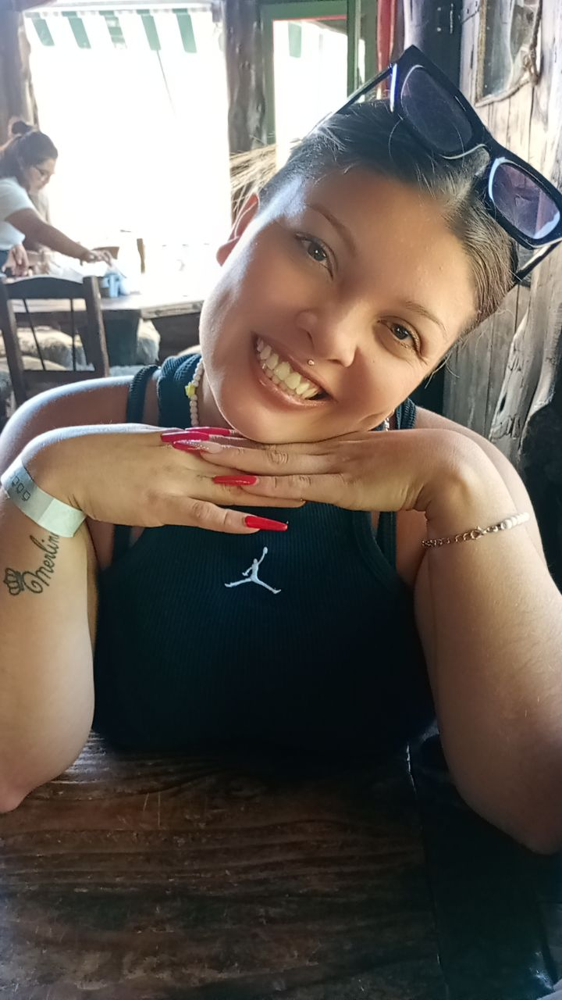
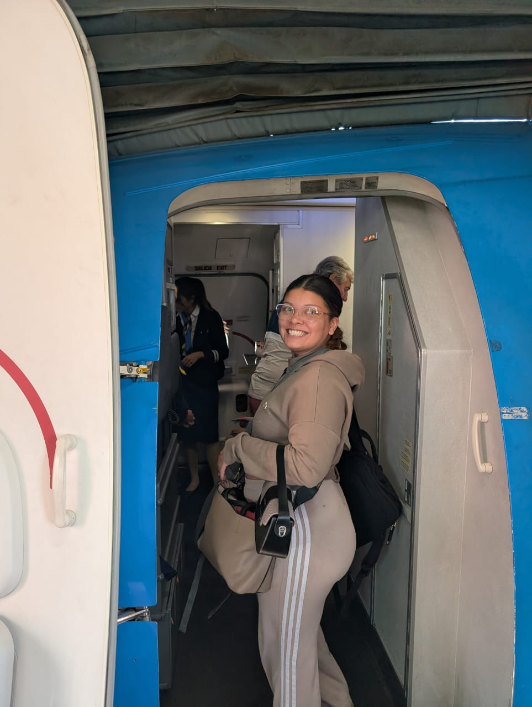
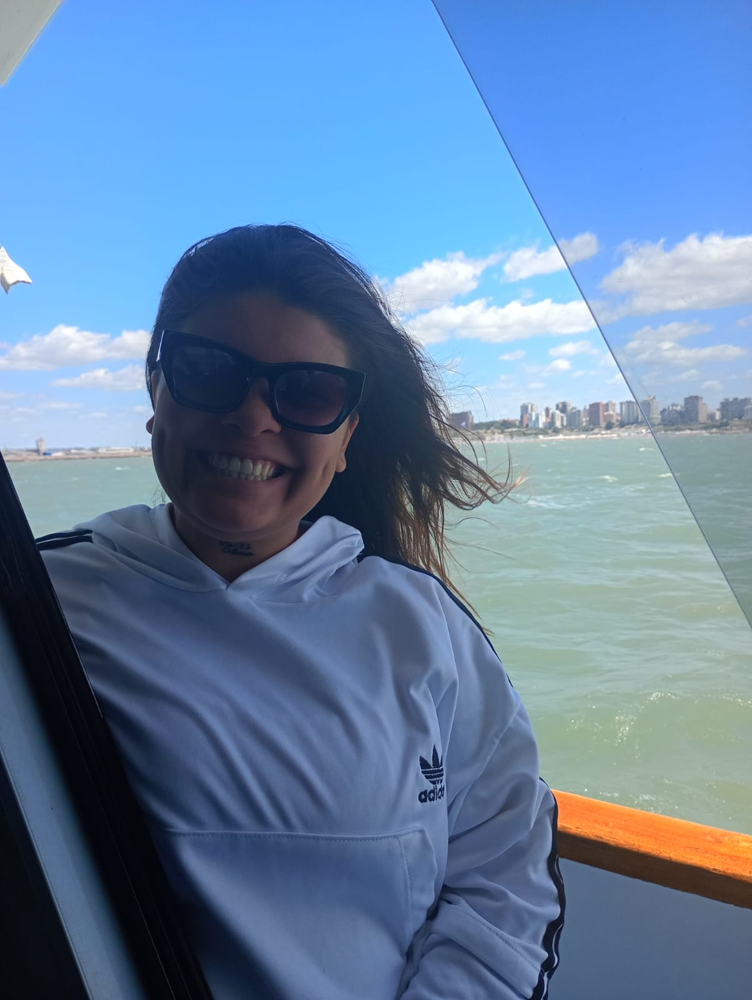
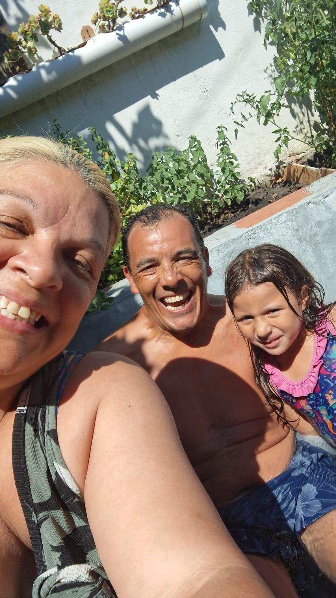
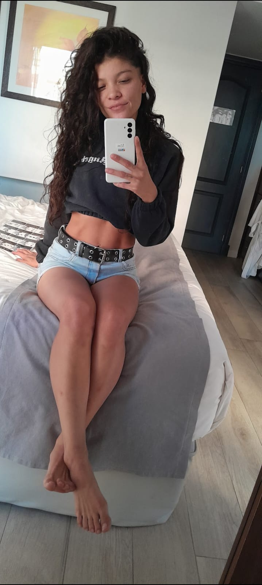

Evelyn Denise Vallejos
Una adicta en recuperación

Mi nombre es Evelyn, aunque si vas a leer mi historia prefiero que me digas Eve. No escribo esta biografía porque crea que hay algo extraordinario en mí, sino porque sanar también es mirar hacia atrás y reconocer el camino recorrido.
Soy una adicta en recuperación, con siete meses limpia. La adicción fue parte de mi historia, pero no define quién soy hoy. Elijo vivir con conciencia, cuidado personal y compromiso con mi proceso, un día a la vez.
Vengo de una familia de cinco personas. Mis padres están juntos hace 28 años y, aunque no todo fue perfecto, hoy son una base fundamental en mi vida. Tengo dos hermanos, Luana y Leandro, y una sobrina de cinco años que, sin saberlo, se convirtió en una luz y un motor clave en mi recuperación. Ella me recordó por qué vale la pena elegir estar presente.
También esta historia incluye a mi pareja, alguien que forma parte de mi proceso, de mis aprendizajes y de mi presente. Hoy camino con gratitud, honestidad y la convicción profunda de que siempre se puede volver a empezar.
Momentos que forman mi historia





